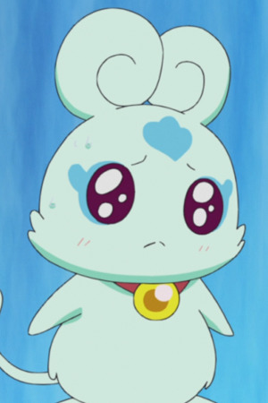
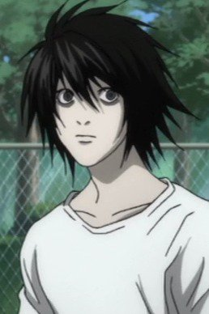
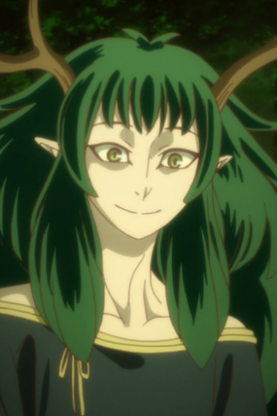
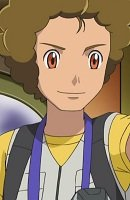

|
Cheshire Cat |
- Pandora Hearts
- Pandora Hearts Specials
|
 |
Chimchar |
- Pokemon Mystery Dungeon: Explorers of Time & Darkness
- Pokemon Mystery Dungeon: Explorers of Sky - Beyond Time & Darkness
|
Chimchar is a Pokemon from the Sinnoh region. Chimchar is the fire starter of the Sinnoh region. Being very agile, it is able to climb the rocky ledges of tall mountain. |
|  |
Flappy |
- Pretty Cure Splash Star
- Pretty Cure Splash Star Tic-Tac Crisic Hanging by a Thin Thread
- Pretty Cure All Stars Movie DX: Minna Tomodachi Kiseki no Zenin Daishuugou
- Pretty Cure All Stars Movie DX2: Kibou no Hikari Rainbow Jewel o Mamore
- Pretty Cure All Stars Movie DX3: Reach the Future! The Rainbow Flower that Connects the World
|
|  |
L |
- Death Note
- Death Note Rewrite
|
|  |
Oberon |
|
|  |
Robert |
|
Robert is a trainer that Ash met on his journey. He wants to be a Pokemon Photographer like his grandfather. |
 |
Todd Snap |
|